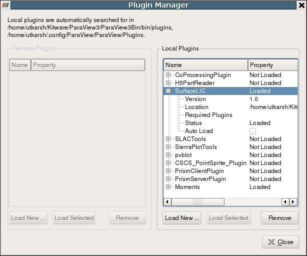
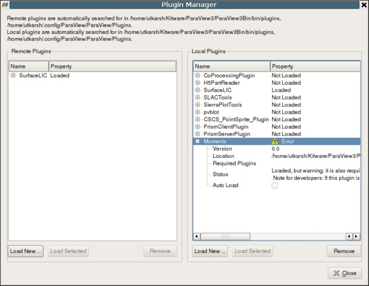

What are Plugins?
Introduction
ParaView comes with plethora of functionality bundled in: several readers, multitude of filters, quite a few different types of views etc. However, it is not uncommon for developers to add new functionality to ParaView. For example to add support for their new file format, incorporate a new filter, etc. ParaView makes it possible to add new functionlity by using an extensive plugin mechanism.
Plugins can be used to extend ParaView in several ways:
Add new readers
Add new writers
Add new filters
Add new GUI components
Add new views
Add new representations
Plugin Types
Plugins are distributed as shared libraries (*.so on Unix, *.dylib on Mac, *.dll on Windows etc). For a plugin to be loadable in ParaView, it must be built with the same version of ParaView as it is expected to be deployed on. Plugins can be classified into two broad categories:
Server-side plugins
These are plugins that extend the algorithmic capabilities for ParaView eg. new filters, readers, writers etc. Since in ParaView data is processed on the server-side, these plugins need to be loaded on the server.
Client-side plugins
These are plugins that extend the ParaView GUI eg. property panels for new filters, toolbars, views etc. These plugins need to be loaded on the client.
Oftentimes a plugin has both server-side as well as client-side components to it eg. a plugin that adds a new filter and a property panel that goes with that filter. Such plugins need to be loaded both on the server as well as the client.
Generally, users don't have to worry whether a plugin is a server-side or client-side plugin. Simply load the plugin on the server as well as the client. ParaView will include relevant components from plugin on each of the processes.
Included Plugins
Included Plugins
ParaView comes with a collection of plugins that the community has developed.
Adios
Loads pixie format files written with the Adios library. This reader support the staging capability of Adios which allow the user to pipe simulation kernels to post-processing tools : such as ParaView throw MPI communication channel and follow in live the computation with no disk IO.
Eye Dome Lighting
A non-photorealistic shading technique designed at EDF (France) to improve depth perception in scientific visualization images.
It relies on efficient post-processing passes implemented on the GPU with GLSL shaders in order to achieve interactive rendering.
Adds extensions to enable exporting state files that can be used by ParaView CoProcessing library.
Force Time
Overrides the VTK time requests. This can be used to create complex animation with different datasets following independent times evolutions.
Note: As this filter overrides the time requests, time-aware filters such as PathLines or PlotOverTime will not behave correctly if they are inserted in a pipeline after this filter.
H5PartReader
The H5Part Reader plugin adds support for reading particle datasets stored in H5Part format. H5Part is a simple wrapper around the HDF5 library and provides a number of convenience functions to manage time steps and access field arrays. The reader supports parallel reading of data using hyperslabs, when used with ParaView compiled with MPI and HDF5 with parallel IO enabled, the reader automatically uses hyperslabs to read portions of data on each process.
Nifti
Reades time varying volumetric/image data from ANALYZE. Supports single (.nii) and dual (.img & .hdr) file storage including zlib compression.
Able to write out ascii or binary files.
Manta View
A view that uses the University of Utah's Manta Real Time Ray Tracer instead of OpenGL for rendering surfaces
Moments
Contains a set of filters that helps analysis of flux and circulation fields. Flux fields are defined on 2D cells and describe flows through the area of the cell. Circulation fields are defined on 1D cells and describes flows in the direction of the cell.
PointSprite
Adds a renderer for point geometry - in particular particle based datasets (though any point based data may be rendered using the provided painter). The plugin permits 3 modes of rendering, which are (in increasing order of complexity), Simple points, texture mapped sprites, and GPU raytraced spheres. The simple point mode allows the user to select a scalar array for the opacity on a per point basis. The texture mode adds support for opacity and radius per point (particle) which is drawn using a user supplied texture (a sphere is provided by default). The GPU mode differs by evaluating a quadric ray/sphere intersection that allow objects to intersect correctly rather than ‘popping’ in and out of view as sprites do. Transfer function editors can be used to map radius/opacity values if simple non-linear lookups are required
SierraPlotTools
Adds toolbar buttons to carry out convenience macros such as toggling the background color between white and black, switching between surface and surface with edges display mode, and opening a wizard for generating plots of global, nodal, or element variables over time. This plugin works on Exodus data only
SLACTools
An extension that streamline ParaView's user interface for Stanford Linear Accelerator users.
Streaming View
Views that render in many streamed passes to reduce memory footprint and provide multiresolution rendering. This plugin replaces the Streaming and Adaptive ParaView derived applications.
SurfaceLIC
Adds support for Line Integral Convolution over arbitrary surfaces.
Prism Plugin
A Sandia contributed plugin for verification and debugging of simulation results. The plugin reads SESAME files to determine the inverse mapping from cartesian to phase space and allows users to visually debug simulations.
pvblot
Implementation of a Sandia National Labs scripting language on top of ParaView.
VisTrails
The VisTrails plugin for ParaView incorporates the provenance management capabilities of VisTrails into ParaView.
All of the actions a user performs while building and modifying a pipeline in ParaView are captured by the plugin. This allows navigation of all of the pipeline versions that have previously been explored.
For more information about this plugin see [7]
Loading Plugins
Loading Plugins
There are three ways for loading plugins:
Using the GUI (Plugin Manager)
Plugins can be loaded into ParaView using the Plugin Manager accessible from Tools | Manage Plugins/Extensions menu. The Plugin Manager has two sections for loading local plugins and remote plugins (enabled only when connected to a server). To load a plugin on the local as well as remote side, simply browse to the plugin shared library. If the loading is successful, the plugin will appear in the list of loaded plugins. The Plugin manager also lists the paths it searched to load plugins automatically.
The Plugin Manager remembers all loaded plugins, so next time to load the plugin, simply locate it in the list and click "Load Selected" button.
You can set up ParaView to automatically load the plugin at startup (in case of client-side plugins) or on connecting to the server (in case of server-side plugins) by checking the "Auto Load" checkbox on a loaded plugin.
|
Figure
1: Plugin Manager when not connected to a remote
server, showing loaded plugins on the local site. |
Figure
2: Plugin Manager when connected to a server showing
loaded plugins on the local as well as remote sites. |
Using environment variable (Auto-loading plugins)
If one wants ParaView to automatically load a set of plugins on startup, one can use the PV_PLUGIN_PATH environment variable. PV_PLUGIN_PATH can be used to list a set of directories (separated by colon (:) or semi-colon (;)) which ParaView will search on startup to load plugins. This enviromnent variable needs to be set on both the client node to load local plugins as well as the remote server to load remote plugins. Note that plugins in PV_PLUGIN_PATH are always auto-loaded irrespective of the status of the "Auto Load" checkbox in the Plugin Manager.
Placing the plugins in a recognized location. Recognized locations are:
A plugins subdirectory beneath the directory containing the paraview client or server executables. This can be a system-wide location if installed as such.
A Plugins subdirectory in the user's home area. On Unix/Linux/Mac, $HOME/.config/ParaView/ParaView<version>/Plugins. On Windows %APPDATA$\ParaView\ParaView<version>\Plugins.